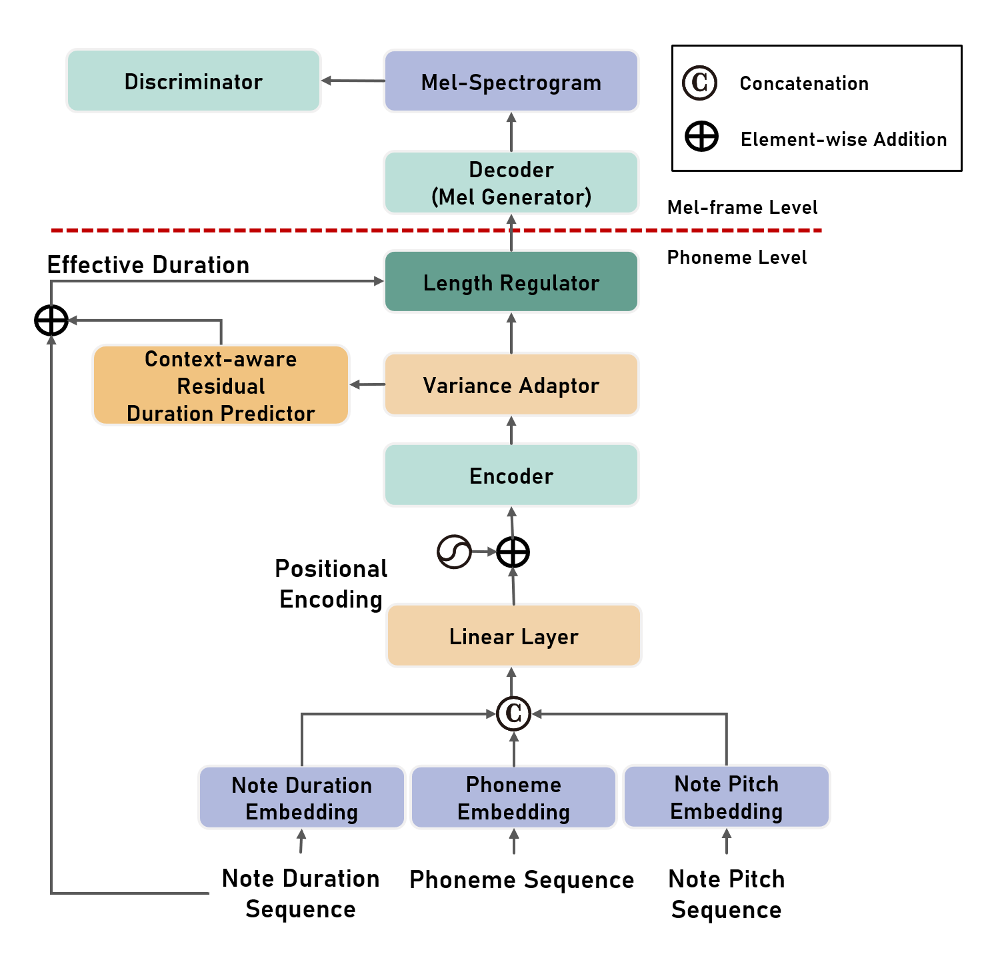
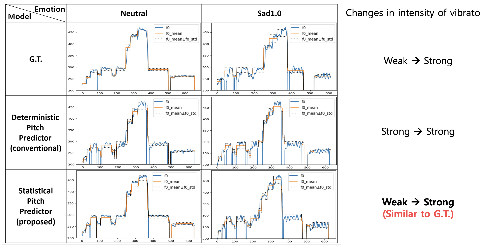
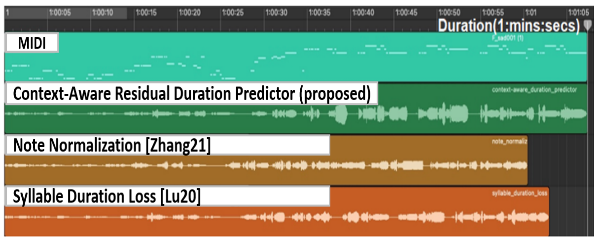
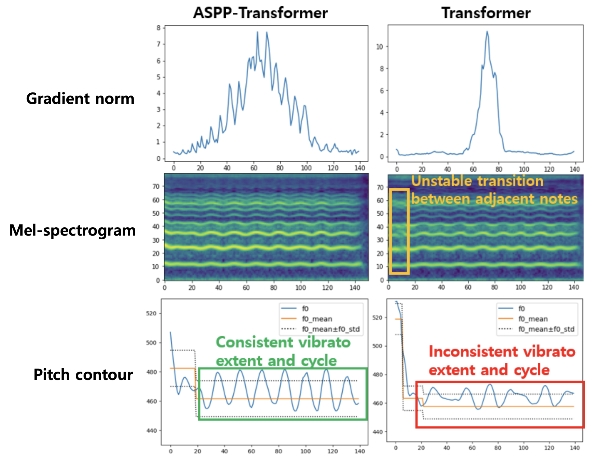
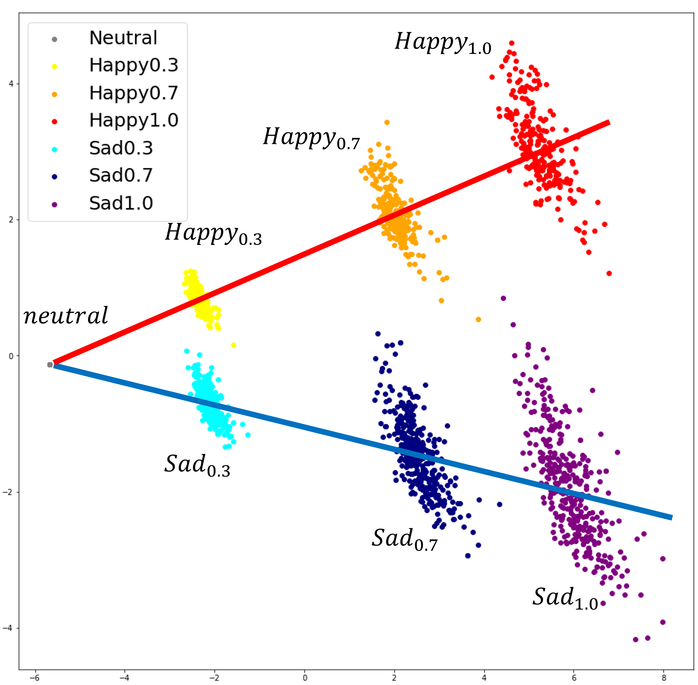

MuSE-SVS
Multi Singer Emotional Singing Voice Synthesizer that Controls Emotional Intensity
We propose a multi-singer emotional singing voice synthesizer, Muse-SVS, that expresses emotion at various intensity levels by controlling subtle changes in pitch and phoneme length while accurately following the lyrics, pitch, and phoneme length of the score. To control multiple style attributes avoiding loss of fidelity and expressiveness due to interference between attributes, Muse-SVS represents all attributes and their relations together by a joint embedding in a unified embedding space. Muse-SVS can express emotional intensity not in the training data, including even stronger emotions than those in the training data, through emotion embedding interpolation and extrapolation. We also propose a statistical pitch predictor to express pitch variance according to emotional intensity and a context-aware residual duration predictor to prevent the accumulation of variances in phoneme duration, which is crucial for synchronization when synthesizing long singing voices. In addition, we propose a novel ASPP-Transformer to improve fidelity and expressiveness by referring to broad contexts. In experiments, Muse-SVS exhibited improved fidelity, expressiveness, and synchronization performance compared with the baseline models. The results of quantitative evaluation and visualization analysis show that the proposed methods effectively express the variance in pitch and phoneme duration according to emotional intensity. To the best of our knowledge, Muse-SVS is the first singing voice synthesizer capable of controlling emotional intensity.
|  |  |
| Model Overall Structure | Variance Adaptor Structure |
Audio Demo
- Demonstaration of overall performance
Please listen to the samples, focusing on expressiveness and fidelity.
(There are the samples of other intensity levels in here)
Samples of male singer (Sad)Neutral Sad 1.0 MuSE-SVS
(proposed)MSME-VISinger MSME-FFTSinger GT
Samples of female singer (Happy)
Neutral Happy 1.0 MuSE-Singer
(proposed)MSME-VISinger MSME-FFTSinger GT
(Audio samples in demo page of the baseline models)
FastSpeech2 VITS - Statistical Pitch Predictor
Statistical Pitch Predictor estimates the distribution of the F0 frequencies at the phoneme level.
Please listen to the samples focusing on vibrato and expressiveness which have high similarity with G.T.This audio samples are corresponding to figure 3 in the paper. Please check more details of the figure in the paper.
Neutral Sad 1.0 G.T. Deterministic Pitch Predictor
(conventional)Statistical Pitch Predictor
(proposed)
- Context-aware Residual Duration Predictor (CRDP)
These audio sample and figure demonstrate that CRDP exhibited a significantly lower synchronization error
than the baseline predictors for a long song.
Please listen to the sample, focusing on synchronization between duration of synthesized voice and MIDI.This figure is figure7 of the paper. Please check more details of the figure in the paper.
 - ASPP-Transformer
This figure and audio samples demonstrate that ASPP-Transformer refers to broader contexts than ordinary Transformer,
producing a more stable Mel-spectrogram and vibrato, which leads to improved fidelity and expressiveness.
Please listen to the samples focusing on fidelity and expressiveness.This figure is figure5 of the paper. Please check more details of the figure in the paper.
ASPP-Transformer Transformer - Emotion Embeddding Interpolation and Extrapolation
Muse-SVS can synthesize singing voices with emotional intensities,
which is not included in training data by emotion embedding interpolation and extrapolation.
Please listen to the samples, focusing on expressiveness and fidelity.This figure is figure8(b) of the paper. Please check more details of the figure in the paper.
Embedding Space
Neutral Happy 0.3 Happy 0.5 (not in the training data) Happy0.7 Happy 1.0 Happy 1.7 (beyond the intensity range of traning data)